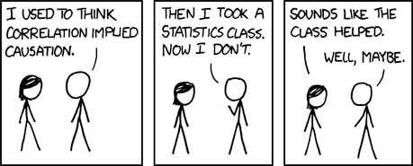
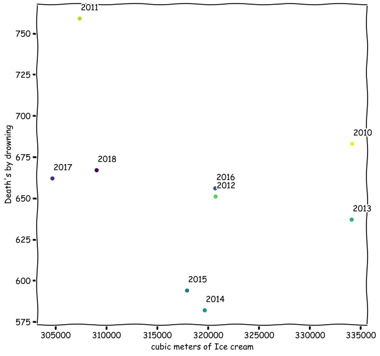
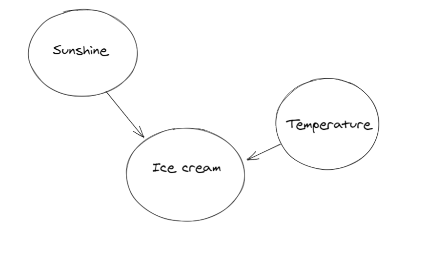
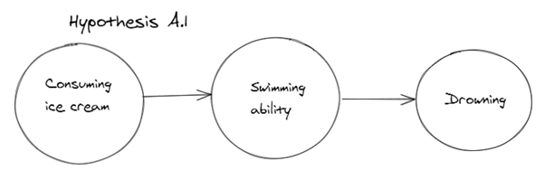
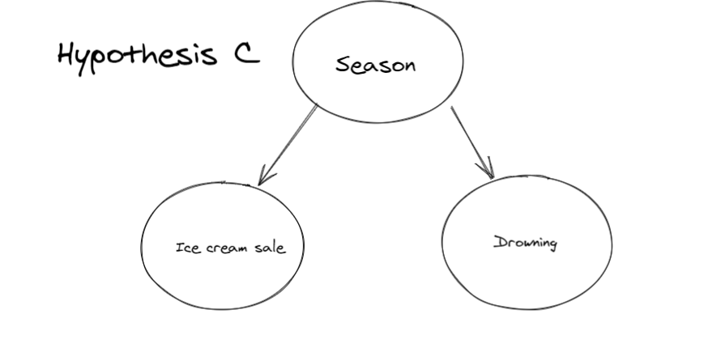

title: “A Story of Ice Cream, Drowning, and Statistical Thinking” subtitle: “Understanding Confounding Variables”
format: revealjs: css: custom.css transition: none aspect-ratio: “16:9” —
Does eating ice cream cause drowning?
. . .
A lesson in correlation, causation, and confounding variables
The Puzzle

. . .
Everyone knows correlation doesn’t imply causation…
. . .
…but what does that really mean?
A Concerning Discovery
The Data:
- Ice cream sales (cubic meters)
- Drowning deaths
- Years: 2010-2018
- Source: Danish Statistics

. . .
There appears to be a relationship between ice cream consumption and drowning deaths
The Correlation is Real

. . .
Pearson correlation: r = 0.78
. . .
This is a strong positive correlation!
Should We Ban Ice Cream?
. . .
Three Possible Explanations
. . .
Hypothesis A: Ice cream → Swimming → Drowning
Eating ice cream makes people want to swim
. . .
Hypothesis B: Drowning → Ice cream sales
News of drownings drives sympathy ice cream consumption?
. . .
Hypothesis C: ???
Something else is going on…
Let’s Look at the Timing

. . .
Both ice cream sales and drowning deaths follow a seasonal pattern
The Monthly Pattern

. . .
Summer months show high values for both variables
. . .
Winter months show low values for both variables
The True Relationship

. . .
Season is a confounding variable:
- Season → Temperature → Ice cream sales
- Season → Water activities → Drowning risk
. . .
The correlation between ice cream and drowning is spurious
Testing Causal Hypotheses

Direct causation?

Confounding through season
. . .
Which model better explains the data?
What About Other Explanations?

. . .
Could temperature and sunshine independently affect both?
. . .
This is still confounding, just with multiple pathways
The Statistical Lesson
Correlation ≠ Causation Because:
. . .
- Confounding variables can create spurious correlations
. . .
- Domain knowledge is essential for causal inference
. . .
- Temporal patterns can reveal hidden relationships
. . .
This is why we need to think carefully about our models
Connecting to Regression
When we run a regression:
\[\text{Drownings} = \beta_0 + \beta_1 \cdot \text{IceCream} + \varepsilon\]
. . .
We might find \(\beta_1 > 0\) and significant
. . .
But this doesn’t mean ice cream causes drowning!
. . .
The “least wrong predictions” might use a spurious relationship
The Fix: Control Variables
\[\text{Drownings} = \beta_0 + \beta_1 \cdot \text{IceCream} + \beta_2 \cdot \text{Temperature} + \varepsilon\]
. . .
Once we control for temperature (or season):
- \(\beta_1\) becomes insignificant
- \(\beta_2\) captures the real effect
. . .
This is why we include control variables in regression
Key Takeaways
- Always visualize your data - patterns matter
- Think about mechanisms - how would X cause Y?
- Consider confounders - what affects both X and Y?
- Time matters - temporal patterns reveal relationships
- Domain knowledge is crucial - statistics alone isn’t enough
. . .
Remember: Your model might make good predictions for the wrong reasons
Application to Economics
Similar spurious correlations appear everywhere:
. . .
- Stock prices and butter production in Bangladesh
- Nicolas Cage movies and swimming pool drownings
- Murder rates and ice cream sales
. . .
The world is full of confounding variables
. . .
Your job as an economist: Find the true causal relationships
References
Raaskov, Andreas. “A story of ice-cream, Drowning and causal modelling.” Medium, 2023.
Images and data from the original blog post
. . .
Remember:
Good statistical analysis requires both mathematical tools and critical thinking